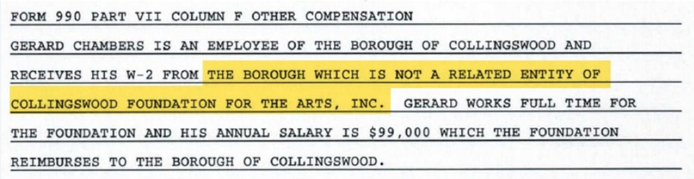
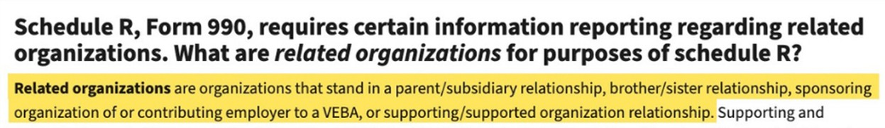
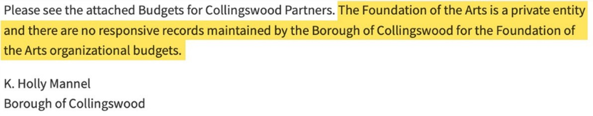
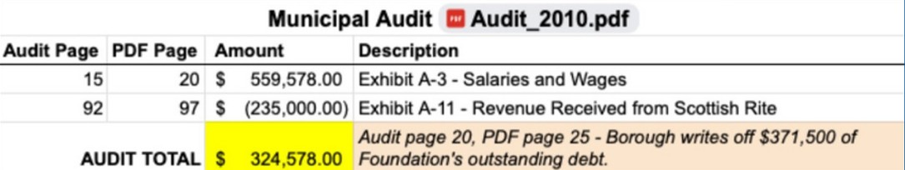
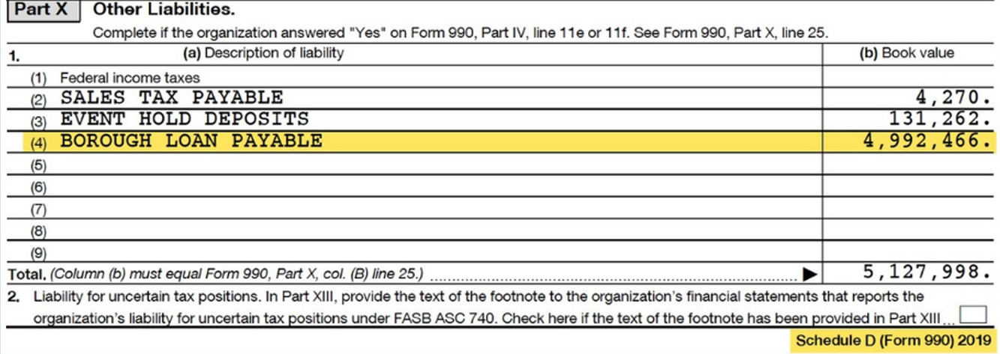
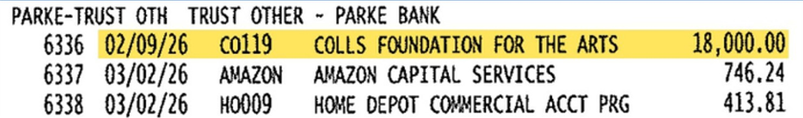

Borough and Foundation Conflicts of Interest
The evidence.
In an NJ Pen article,* James Maley is on the record making several unsupported claims without evidence about the relationship between the Borough and the Foundation for the Arts. Here are the facts.

*All quotes credit to NJ Pen.
https://www.njpen.com/collingswood-moves-to-transfer-scottish-rite-to-county-oversight-amid-operational-struggles/
Unsupported Claim #1:
“The Foundation was responsible to operate; the borough’s responsibility was to pay for everything.” (Maley)
The actual evidence: Per the Borough’s agreement with the Foundation, the Foundation is responsible for all expenses.
![6. Utilities and Expenses: Unless otherwise agreed by the parties during the term of this Agreement, all utilities, including but not limited to electric, gas, water and sewer shall be the responsibility of the Foundation. 7. Operating Expenses: Unless otherwise agreed by the parties during the term of this Agreement, all operating expenses including all permits and inspections shall be paid by the Foundation and all maintenance of the Premises including but not limited to landscaping, trash removal, janitorial and snow removal, shall be the responsibility of the Foundation. 8. Borough's Right to Use Premises: the Borough shall have the right to use and occupy the Premises for specific events when such events do not conflict with events scheduled by the Foundation. The parties hereby agree to the following terms and conditions: 1. Premises, Term, Purpose and Use. (a) The Foundation agrees to provide management services and to provide any other services that may be required in the operation of the Premises including, but not limited to, maintenance and repairs.](../claim-1.jpg)
This 2007 agreement came two years after the Foundation applied for their alcohol permit. Public records requests show no other Borough-Foundation agreements.
Read the full lease agreement here:
https://qr.link/vogbZE
Unsupported Claim #2:
“the Foundation is the borough’s creation” ... “it was all one; all the borough.” (Maley)
The actual evidence: Since at least 2011, the Foundation’s IRS tax filings state that the Borough “is not a related entity of Collingswood Foundation for the Arts, Inc.”

“CFA 990 - 2018 Full.pdf” / PDF page 26
“Related” entities or organizations are specifically defined by the IRS:

See the Foundation's IRS filings here:
https://colls.info
The Borough’s 2020 audit states that the Board is in the process of assuming control of the Foundation, indicating that the Borough did not yet control the Foundation.
![BOROUGH OF COLLINGSWOOD NOTES TO FINANCIAL STATEMENTS YEARS ENDED DECEMBER 31, 2020 AND 2019. NOTE 27: SUBSEQUENT EVENTS. Management has reviewed and evaluated all events and transactions that occurred between December 31, 2020 and June 28, 2021, the date that the financial statements were issued. As a result of the spread of the COVID-19 coronavirus, economic uncertainties have arisen which are likely to negatively impact the collection of certain anticipated revenues, such as licenses, fees and permits, and municipal court fees. One known impact that occurred was the loss of revenue at the Collingswood Foundation for the Arts. This non-profit organization was indebted to the Borough for the purpose of renovations of the Scottish Rite Auditorium. The Board of Commissioners is in the process of assuming control of the non-profit and placing the activities in its Recreation Department. Other financial impact could occur though such potential impact is unknown at this time.](../claim-2_3.jpg)
Report of Audit Year Ended December 31, 2020, Page 82
Court filings by the Foundation in May 2026 assert that the Borough and Foundation have only an “unofficial relationship.”
![Defendant Collingswood Foundation for the Arts, Inc. (the Defendant) by and through their undersigned counsel, respectfully request that this Court set aside the default (the Default) entered against Defendants on May 18, 2026, and in support thereof, states as follows: Facts and Procedural History. This matter arises out of a contract dispute in which Plaintiff Chammings Electric, Inc. (Plaintiff) alleges Defendant owes Plaintiff $39,200.00 for work performed on Defendant's theatre known as the Scottish Rite. Plaintiff filed its Complaint on January 14, 2026. The Borough of Collingswood has an unofficial relationship with the Defendant and sought to assist in the situation beginning in January 2026 by engaging in correspondence with the Plaintiff with the goal...](../claim-2_4.jpg)
Read here:
Unsupported Claim #3:
“The books are open. No one’s ever asked [to see them before].” (Maley)
The books are not open. In May 2026, the Borough rejected an Open Public Records Act (OPRA) request for the organizational budgets for the Foundation, stating that the Foundation “is a private entity.”

In the same OPRA response, the Borough did provide organizational budgets for Collingswood Partners, which is an actual Borough nonprofit.
See the full OPRA request here:
https://qr.codes/gbUOso
Unsupported Claim #4:
“Before [the pandemic]...the borough never had to put cash in.” (Maley)
The actual evidence: For every year but one from 2003 through 2026, Borough audits and records show cash transfers to the Foundation.
For example, in 2010, the Borough paid $559,578 in “Salaries and Wages” for the Foundation while receiving only $235,000 of revenue from the Scottish Rite.
The Borough also wrote off $371,500 of the Foundation’s outstanding debt to the Borough.

See the full 2003-2026 ledger of public Borough-Foundation transactions here:
https://qr.codes/wnH7Y9
Misleading Claim #5:
“The CFO also confirmed that the $5-million bond...was repaid in full in 2019.” (NJ Pen)
While the Borough and Collingswood taxpayers may have completed paying off the $5-million bond, IRS records show that the Foundation had not paid back the Borough for the loan by the end of 2019.

Other liabilities at the end of year, 2019. “CFA 990 - 2019 Full.pdf” / PDF page 24
See PDF pages 12 and 24 of the Foundation's 2019 IRS filings here:
https://qr.link/dVJLiT
False Claim #6:
“[Borough CFO] said the borough has not paid out CFA in 2026...” (NJ Pen)
The actual evidence: The borough paid out $18,000 on February 9, 2026, to the Foundation for the Arts.

Resolution 2026-85, Adopted March 2, 2026
See the payment yourself on page 31:
All of the documents and sources are public.
Read them here.